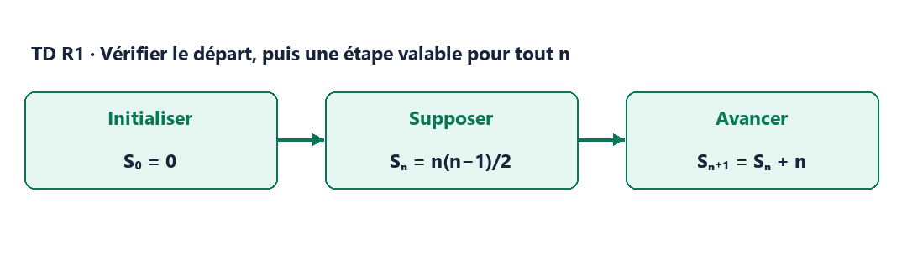

Comprendre le cours
1. Lire une affirmation avant de la prouver
Le symbole ∀ signifie « pour tout » et ∃ « il existe ». Dans ∀x ∃y, le choix de y peut dépendre de x. Dans ∃y ∀x, un même choix de y doit fonctionner partout. Pour nier une assertion, inverse les quantificateurs l’un après l’autre et nie la condition finale, sans changer les ensembles considérés.
Une implication P ⇒ Q affirme que Q doit être vraie quand P est vraie. Sa contraposée non Q ⇒ non P est équivalente. Sa réciproque Q ⇒ P est une autre affirmation à démontrer séparément. Un contre-exemple à l’implication doit satisfaire P et contredire Q.
2. Choisir une forme de démonstration
Une preuve directe utilise les hypothèses pour obtenir la conclusion. Par l’absurde, suppose la négation de ce que tu veux prouver et cherche une contradiction. Pour utiliser une contraposée, repère d’abord quel sens devient plus simple à démontrer.

En récurrence, écris clairement la propriété P(n). L’initialisation la vérifie au premier rang. L’hérédité suppose P(n) et démontre P(n+1) pour un rang quelconque. Dans une récurrence forte, tu peux utiliser toutes les propriétés précédentes si tu prouves le passage avec cette hypothèse.
3. Rédiger avec LaTeX
Le fichier .tex décrit la structure et le contenu. Le préambule déclare la classe du document et les extensions. Le corps s’écrit dans l’environnement document. Pour une formule courte utilise \( … \) et pour une formule séparée \[ … \]. Les sections, listes et références produisent une structure exploitable dans le PDF.
Pour nommer une équation, une section ou une figure, place une étiquette avec \label, puis appelle-la avec \ref ou \eqref selon le contexte. Si une référence apparaît sous forme de points d’interrogation, vérifie son nom et recompile après la première passe. Le mode verbatim aide à montrer une commande telle qu’elle a été écrite.
4. Partager et fusionner des versions Git
Un commit enregistre une version des fichiers sélectionnés. git status montre ce qui est modifié ou prêt à enregistrer. git diff permet de relire les changements avant de les ajouter. Le dépôt distant permet à chacun d’échanger ses versions avec les autres clones.
Si les deux copies ont modifié le même passage pour obtenir des résultats incompatibles, Git signale un conflit. Lis les deux variantes, écris le texte final dans le fichier, retire les marqueurs et recompile. Enregistre ensuite la résolution. Le fichier .gitignore aide à laisser de côté les fichiers auxiliaires générés qui ne sont pas déjà suivis.
Du cours aux TD et TP
Questions TD & TP
TD R1, ex. 1 · Prouver la formule de la somme
Énoncé. Prouver que la somme des entiers de 0 à n−1 vaut n(n−1)/2.
- Pour n=0, la somme vide vaut zéro et la formule aussi.
- Suppose la formule vraie au rang n. Pour passer à la somme de 0 à n, ajoute n. On obtient
n(n−1)/2+n=n(n+1)/2. - C’est la formule prévue au rang n+1. Le principe de récurrence donne donc le résultat à tous les rangs. Attention au terme ajouté. L’intervalle initial s’arrête à n−1.
TD R2, ex. 3 · Nier « tout entier est un carré augmenté de 1 »
Énoncé. Nier ∀n∈ℕ, ∃k∈ℕ, n=k²+1 et déterminer l’affirmation vraie.
- Transforme le premier « pour tout » en « il existe ». Transforme le second « il existe » en « pour tout ».
- Nie l’égalité. Tu obtiens
∃n∈ℕ, ∀k∈ℕ, n≠k²+1. - Prends
n=0. Quel que soit k,k²+1≥1. C’est donc la négation qui est vraie.
TD R2, ex. 4 · Rédiger la preuve par l’absurde
Énoncé. Montrer que ranger n+1 paires de chaussettes dans n tiroirs force un tiroir à en contenir au moins deux.
- Suppose que chaque tiroir contient au plus une paire.
- Les n tiroirs contiennent alors au plus n paires, alors qu’on en a rangé n+1. Cette contradiction rejette l’hypothèse. Il existe donc un tiroir contenant au moins deux paires.
TP1 · Construire un document et lire la compilation
Énoncé. Écrire le premier document « Hello World », le compiler et retrouver le PDF.
- Dans un fichier
premier.tex, écris une classearticle, puis un environnementdocumentcontenant la phrase. - Compile depuis l’éditeur du TP ou avec le moteur choisi. Vérifie le nom et le dossier du PDF. Pour voir l’effet d’une erreur, omets volontairement la fermeture de l’environnement dans une copie, lis le premier message du journal et corrige-la.
- Dans le TP « Oh la belle réf », mets une étiquette après le titre numéroté et crée un appel vers elle. Recompile jusqu’à la résolution correcte du numéro.
TP5 · Relire une fusion dans les deux clones
Énoncé. Travailler avec les deux clones du TP, ajouter correction.tex et contrôler la synchronisation puis la fusion.
- Dans repoB, compile le document avant de committer. Ajoute le fichier
.gitignoreprévu et vérifie le statut. Pousse la version et récupère-la dans repoC. - Dans repoC, prépare la nouvelle section, ajoute les commandes en
verbatim, puis valide le PDF. Lorsque les deux copies divergent, récupère les nouveaux commits avant de résoudre la fusion. - En cas de conflit, garde le contenu final voulu, supprime tous les marqueurs et recompile. Enregistre la résolution et vérifie que les deux clones retrouvent le document attendu.